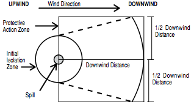

HOW TO USE TABLE 1 - INITIAL ISOLATION AND PROTECTIVE ACTION DISTANCES
- The responder should already have:
- Identified the material by its ID Number and Name; (if an ID Number cannot be found, use the Name of Material index in the blue-bordered pages to locate that number.)
- Found the three-digit guide for that material in order to consult the emergency actions recommended jointly with this table;
- Noted the wind direction.
- Look in Table 1 (the green-bordered pages) for the ID Number and Name of the Material involved in the incident. Some ID Numbers have more than one shipping name listed— look for the specific name of the material. (If the shipping name is not known and Table 1 lists more than one name for the same ID Number, use the entry with the largest protective action distances.)
- Determine if the incident involves a SMALL or LARGE spill and if DAY or NIGHT. Generally, a SMALL SPILL is one which involves a single, small package (e.g., a drum containing up to approximately 208 liters (55 US gallons)), a small cylinder, or a small leak from a large package. A LARGE SPILL is one which involves a spill from a large package, or multiple spills from many small packages. DAY is any time after sunrise and before sunset. NIGHT is any time between sunset and sunrise.
- Look up the INITIAL ISOLATION DISTANCE. Direct all persons to move, in a crosswind direction, away from the spill to the distance specified—in meters and feet.
- Look up the initial PROTECTIVE AcTION DISTANcE shown in Table 1. For a given material, spill size, and whether day or night, Table 1 gives the downwind distance—in kilometers and miles— for which protective actions should be considered. For practical purposes, the Protective Action Zone (i.e., the area in which people are at risk of harmful exposure) is a square, whose length and width are the same as the downwind distance shown in Table 1.
- Initiate Protective Actions to the extent possible, beginning with those closest to the spill site and working away from the site in the downwind direction. When a water-reactive TIH producing material is spilled into a river or stream, the source of the toxic gas may move with the current or stretch from the spill point downstream for a substantial distance.
The shape of the area in which protective actions should be taken (the Protective Action Zone) is shown in this figure. The spill is located at the center of the small circle. The larger circle represents the INITIAL ISOLATION zone around the spill.

NOTE 1: See “Introduction To Green Tables – Initial Isolation And Protective Action Distances” under "Factors That May Change the Protective Action Distances" (page 285)
NOTE 2: See Table 2 – Water-Reactive Materials which Produce Toxic Gases for the list of gases produced when these materials are spilled in water.
call the emergency response telephone number listed on the shipping paper or the appropriate response agency as soon as possible for additional information on the material, safety precautions and mitigation procedures.